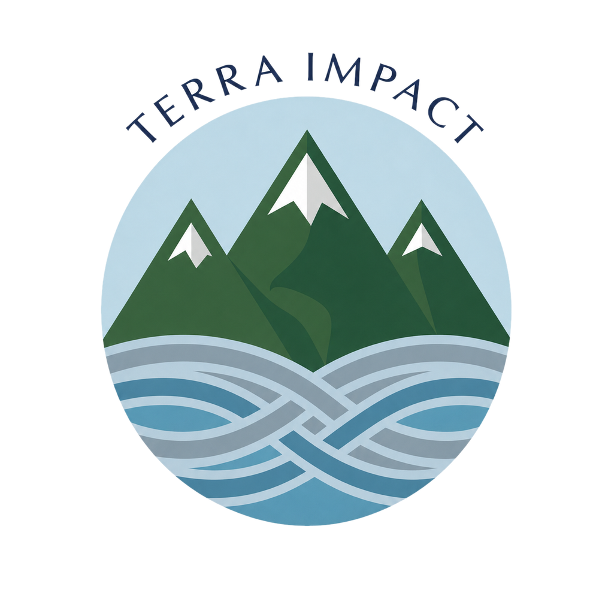

Strategic Advisory
Turning sustainability priorities into business and financial strategy.
We advise boards, executives and senior management teams on consequential decisions at the intersection of sustainability, finance and enterprise strategy.
Sustainable Finance. Strategic Insight. Lasting Value.
We advise boards, C-suite executives and senior leaders as they respond to a rapidly changing landscape shaped by the energy transition, climate and nature risks, evolving capital markets, technological transformation and shifting stakeholder expectations.
Our focus is on turning complex sustainability priorities into practical strategies, credible financing approaches and opportunities for long-term value creation.

Navigating a Changing Market
Sustainability is increasingly intertwined with business strategy, access to capital, energy security, infrastructure investment and long-term resilience.
At the same time, the landscape is becoming more complex. Regulatory approaches are diverging across markets. Investors are demanding greater financial and strategic rigor. AI and electrification are accelerating power and infrastructure needs. Climate impacts are changing the economics of assets and operations. Nature and biodiversity are emerging as financial considerations.
Terra Impact helps leaders determine what matters, where the opportunities lie and how capital can support their ambitions.
What We Do
Turning sustainability priorities into business and financial strategy.
We advise boards, executives and senior management teams on consequential decisions at the intersection of sustainability, finance and enterprise strategy.
Connecting sustainability ambitions with capital.
Terra Impact helps organizations evaluate financing strategies and engage effectively with capital providers.
We work at the intersection of issuer objectives, investor expectations and market realities, helping clients determine when and how sustainable finance can support broader strategic goals.
Positioning organizations for the next generation of investment.
The transition to a more resilient, resource-efficient economy is creating new financing requirements and investment opportunities across industries.
We help clients assess where market developments intersect with their businesses, assets, stakeholders and capital needs.
Helping mission and capital come together.
For nonprofits, social enterprises, foundations and other mission-driven organizations, strong impact strategies increasingly require sophisticated approaches to financing and partnerships.
Terra Impact helps organizations explore pathways to mobilize public, philanthropic and private capital around environmental and social outcomes.
Why Terra Impact
Financial rigor. Sustainability expertise. Senior-level perspective.
Terra Impact brings together experience across investment banking, institutional asset management, sustainable finance, corporate advisory and nonprofit governance.
This combination enables us to examine sustainability questions through multiple lenses: those of the enterprise, capital provider, investor, board and mission-driven organization.
We provide independent, senior-level advice designed to help clients:
Focus on the sustainability issues most relevant to long-term business and organizational objectives.
Evaluate where changes in markets, technology, policy and capital allocation may create new opportunities.
Connect sustainability strategies with credible financing and investor considerations.
Bring financial discipline and an independent perspective to complex strategic choices.
Develop pathways for bringing together organizations, investors and other capital providers around meaningful outcomes.
Global Perspective
Global markets. Context-specific solutions.
Sustainability and sustainable finance are evolving differently across regions.
Terra Impact brings a global perspective while recognizing that strategies must reflect local markets, regulatory environments, capital sources and organizational priorities.
We work across developed and emerging markets, with particular relevance to clients and opportunities in the United States, Europe and Asia.
Leadership
Founder & Managing Partner
Terra Impact is founded and led by Manju Seal, former Head of Sustainable Finance and Capital Markets ESG Lead at BMO Financial Group.
Her career spans sustainable finance, investment banking, institutional asset management, fixed income investing and corporate governance.
Today, she brings that experience to organizations navigating increasingly interconnected questions of strategy, sustainability and capital.
Meet Manju →The transition ahead will require more than commitments. It will require informed choices about strategy, investment, financing and partnerships.
Terra Impact works with leaders seeking to translate sustainability challenges into credible strategies and opportunities for long-term value creation.